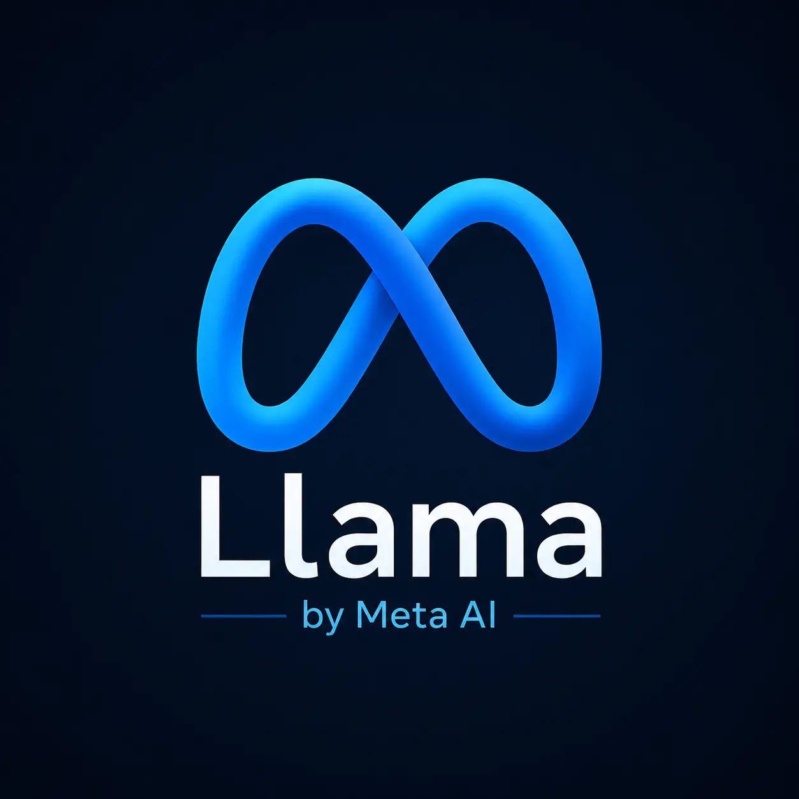

Llama es una familia de modelos de inteligencia artificial desarrollada por Meta. Se usa en investigación, desarrollo de aplicaciones, generación de texto y proyectos basados en modelos abiertos.
Ir a Llama OficialDesarrollador
Modelos abiertos
Lenguaje natural
Se utiliza para probar modelos, entrenamientos y aplicaciones de IA.
Apoya la creación de proyectos, asistentes y herramientas inteligentes.
Genera respuestas, explicaciones y contenido en lenguaje natural.
Puede integrarse en sistemas, plataformas y soluciones educativas.